Camera
Camera Overview
The camera rollout controls the way the scene geometry is projected onto the image. Note that if you use the VRayPhysicalCamera in your scene, most of the parameters in this section are ignored, with the exception of some of the motion blur parameters (those on the right-hand side of the dialogue).
Camera Type
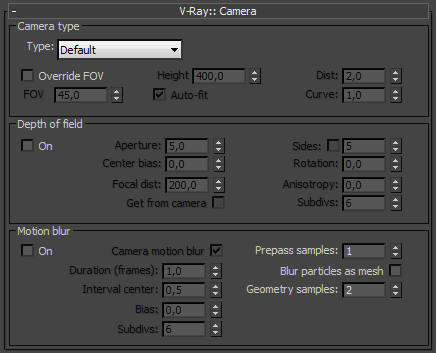 The cameras in V-Ray generally define the rays that are cast into the scene, which essentially is how the scene is projected onto the screen. V-Ray supports several camera types: Standard, Spherical, Cylindrical (point),Cylindrical (ortho), Box and Fish eye. Orthographic views are supported too.
For V-Ray versions prior to SP3 the parameters in this section are ignored, if you are rendering from a VRayPhysicalCamera. V-Ray SP3 and later version take the settings in this menu into consideration.
Override FOV - with this setting you can override the 3ds Max's FOV angle. This is because some V-Ray camera types can take FOV ranges from 0 to 360 degrees, whereas the cameras in 3ds Max are limited to 180 degrees.
FOV - here you specify the FOV angle (only when Override FOV is turned on and the current camera type supports FOV angle).
Height - here you can specify the height of the Cylindrical (ortho) camera. This setting is available only when the Type is set to Cylindrical (ortho).
Auto-fit - this setting controls the auto-fit option of the Fish-eye camera. When Auto-fit is enabled, V-Ray will calculate the Dist value automatically so that the rendered image fits horizontally with the image's dimensions.
Dist - this setting applies only to the Fish-eye camera. The Fish-eye camera is simulated as a Standard camera pointed to an absolutely reflective sphere (with a radius of 1.0) that reflects the scene into the camera's shutter. The Dist value contorts how far is the camera from the sphere's center (which is how much of the sphere will be captured by the camera). Note: this setting has no effect when the Auto-fit option is enabled.
Curve - this setting applies only to the Fish-eye camera. This setting contorts the way the rendered image is warped. A value of 1.0 corresponds to a real world Fish-eye camera. As the value approaches 0.0 the warping is increased. As the value approaches 2.0 the warping is reduced. Note: in fact this value controls the angle at which rays are reflected by the virtual sphere of the camera.
Type - from this list you can select the type of the camera. See the Examples below for a more detailed discussion on camera types.
-
Standard - this is a standard pinhole camera.
-
Spherical - this is a spherical camera which means that the camera lenses has spherical form.
-
Cylindrical (point) - with this type of camera all rays have a common origin - they are cast from the center of the cylinder. In the vertical direction the camera acts as a pinhole camera and in the horizontal direction it acts as a spherical camera.
-
Cylindrical (ortho) - in vertical direction the camera acts as an orthographic view and in the horizontal direction it acts as a spherical camera.
-
Box - the box camera is simply 6 standard cameras placed on the sides of a box. This type of camera is excellent for generation of environment maps for cube mapping. It may be very useful for GI too - you can calculate the irradiance map with a Box camera, save it to file and you can reuse it with a Standard camera that can be pointed at any direction.
-
Fish eye - this special type of camera captures the scene as if it is normal pinhole camera pointed at an absolutely reflective sphere which reflects the scene into the camera's shutter. You can use the Dist / FOV settings to control what part of the sphere will be captured by the camera. The red arc in the diagram corresponds to the FOV angle. Note that the sphere has always a radius of 1.0.
-
Warped spherical - another spherical camera with slightly different mapping formula.
Example: Camera Types
The images below show the difference between the different camera types:
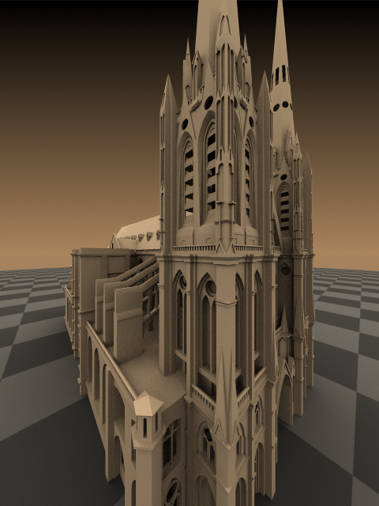
Standard camera

Spherical camera
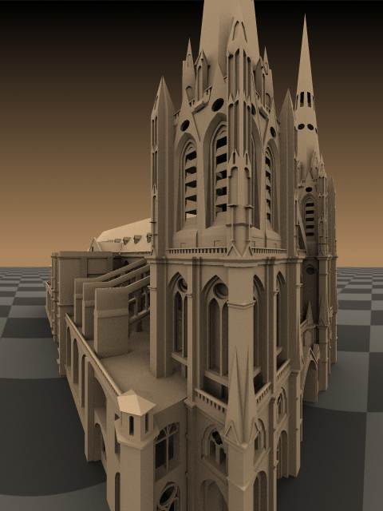
Cylindrical camera
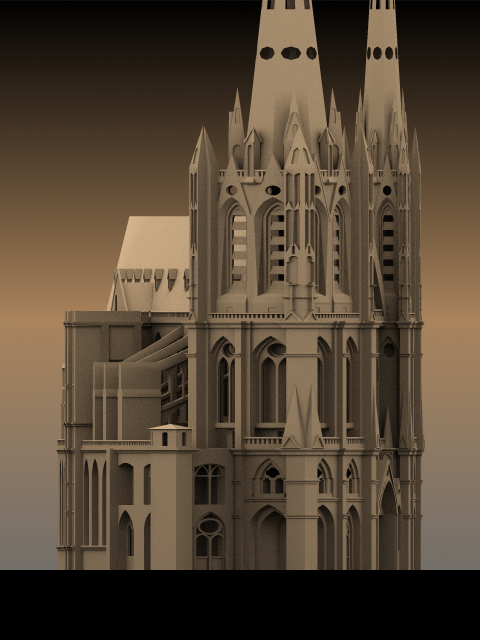
Orthographic cylinder

Box camera
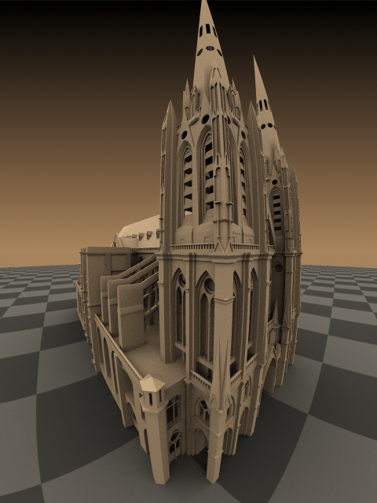
Fish-eye camera
Example: Camera Types Explained
This example shows how the rays for different camera types are generated. The red arcs in the diagrams correspond to the FOV angles.
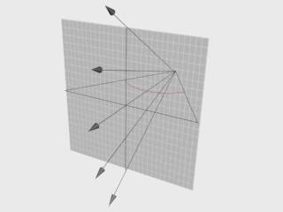
Standard
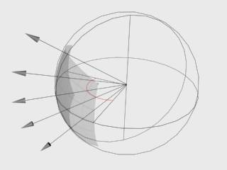
Spherical

Cylindrical (point)
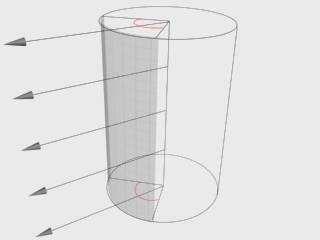
Cylindrical (ortho)
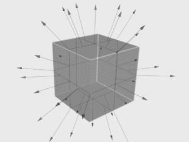
Box
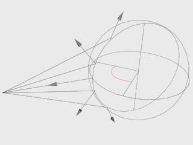
Fish-eye
Depth of Field
These parameters control the depth of field effect when rendering with a standard 3ds Max camera or with a perspective viewport. The parameters are ignored if you render from a VRayPhysicalCamera view.
On - turns the depth-of-field effect on.
Aperture - this is the size of the virtual camera aperture, in world units. Small aperture sizes reduce the DOF effect, larger sizes produce more blur.
Center bias - this determines the uniformity of the DOF effect. A value of 0.0 means that light passes uniformly through the aperture. Positive values mean that light is concentrated towards the rim of the aperture, while negative values concentrate light at the center.
Focal distance - determines the distance from the camera at which objects will be in perfect focus. Objects closer or farther than that distance will be blurred.
Get from camera - when this option is on, the Focal distance is determined from the camera target, if the rendering is done from a camera view.
Sides - this option allows you to simulate the polygonal shape of the aperture of real-world cameras. When this option is off, the shape is assumed to be perfectly circular.
Rotation - specifies the orientation of the aperture shape.
Anisotropy - this option allows the stretching of the bokeh effect horizontally or vertically. Positive values stretch the effect in the vertical direction. Negative values stretch it in the horizontal direction.
Subdivs - controls the quality of the DOF effect. Lower values are computed faster, but produce more noise in the image. Higher values smooth out the noise, but take more time to render. Note that the quality of sampling also depends on the settings of the DMC Sampler as well as on the chosen Image sampler.
Motion Blur
On - turns motion blur on.
Example: Motion Blur
This example demonstrates the various parameters for motion blur.
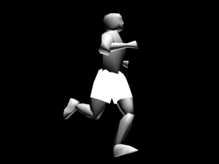
Motion blur is off
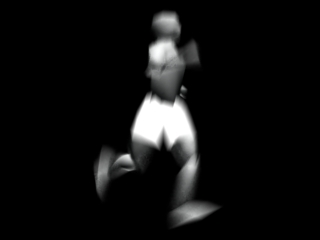
Motion blur is on
Duration - specifies the duration, in frames, during which the camera shutter is open.
Example: Duration
The following scene consists of three-frame animation of moving cone. In the first frame the cone is on the left. In the second frame it is at the box. And in the third frame the cone is on the right:
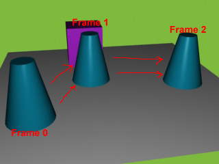
The following images show frame 1 rendered with different duration values:
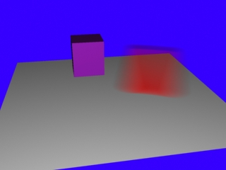
Duration 0.5 (frames)
Duration 2.0 (frames)
Interval center - specifies the middle of the motion blur interval with respect to the 3ds Max frame. A value of 0.5 means that the middle of the motion blur interval is halfway between the frames. A value of 0.0 means that the middle of the interval is at the exact frame position.
Example: Interval Center
This example demonstrates the effect of the interval center parameter. The scene is a moving sphere. Here are three sequential frames without motion blur:
Here is the middle frame, rendered with motion blur and three different values for the interval center; the motion blur duration is one frame.
Interval center = 0.0; the middle of the motion blur interval matches the sphere position at the second frame
Interval center = 0.5; the middle of the interval is halfway between the second and the third frame
Interval center = 1.0; the middle of the interval matches the sphere position at the third frame
Bias - this controls the bias of the motion blur effect. A value of 0.0 means that the light passes uniformly during the whole motion blur interval. Positive values mean that light is concentrated towards the end of the interval, while negative values concentrate light towards the beginning.
General Motion Blur Parameters
These parameters are used whether you are rendering from a standard camera or from a VRayPhysicalCamera with motion blur enabled.
Prepass samples - this controls how many samples in time will be computed during irradiance map calculations.
Blur particles as mesh - this option controls the blurring of particle systems. When this is on, particles will be blurred like normal meshes. However, many particle systems change the number of particles between frames. You can turn off this option to compute the motion blur from the velocity of the particles instead.
Geometry samples - this determines the number of geometry segments used to approximate motion blur. Objects are assumed to move linearly between geometry samples. For fast-rotating objects, you need to increase this to get correct motion blur. Note that more geometry samples increase the memory consumption, since more geometry copies are kept in memory. You can also control the number of geometry samples on a per-object basis from the Object settings dialogue.
Example: Geometry Samples
The following images demonstrate the Geometry samples parameter. Duration (frames) is set to 2. All other parameters are the same as for the previous images. The higher value is set for Geometry samples the more accurate is the estimated object motion. However excessive increase of this value will result in long rendering times:
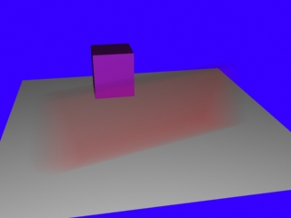
Geometry samples = 2
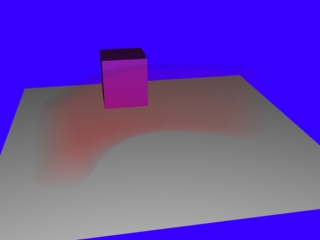
Geometry samples = 8
The geometry samples parameter is useful when motion-blurring complex motions, for example fast-rotating objects. Here is an example with an accelerating airplane propeller:
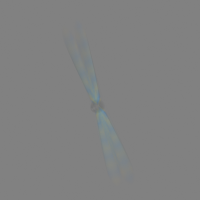
Geometry samples = 2

Geometry samples = 3
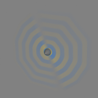
Geometry samples = 6
Geometry samples = 10
Note that you can control the number of geometry samples on a per-object basis (from the Object properties dialog). This is useful if you need a lot of samples only for some objects in the scene (for example, the wheels of a car) while other objects (the car body) can do with fewer samples, thus saving memory and speeding rendering.
Subdivs - determines the quality of the motion blur. Lower values are computed faster, but produce more noise in the image. Higher values smooth out the noise, but take more time to render. Note that the quality of sampling also depends on the settings of the DMC Sampler as well as on the chosen Image sampler.
Notes
-
Depth of field is supported only for the Standard camera type. Other camera types do not produce depth of field effect at this time.
-
When DOF and motion blur are both enabled, they are sampled together using the higher of the two Subdivs parameters.